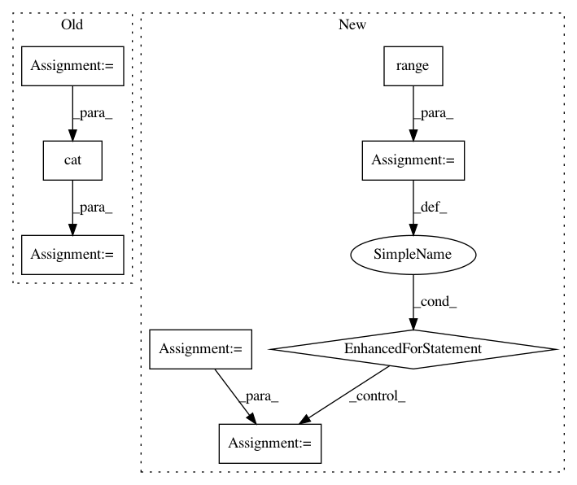

fa6f47e7aee228226421c52e61cce4e1ab4cc099,tests/ml/test_loss.py,,test_permutation_invariant_loss_tf,#,40
Before Change
for shift in range(n_sources):
sources_a = sources[:, :, :, shift:]
sources_b = sources[:, :, :, :shift]
shifted_sources = torch.cat(
[sources_a, sources_b], dim=-1)
_loss_b = LossPIT(shifted_sources, sources).item()
assert _loss_a == _loss_b
def test_combination_invariant_loss_tf():
After Change
noisy = sources + n * torch.randn_like(sources)
_loss_a = LossL1(noisy, sources).item()
for i in range(n_batch):
p = random.choice(list(permutations(range(n_sources))))
permuted_batch = noisy[i, ..., list(p)].unsqueeze(0)
permuted.append(permuted_batch)
permuted = torch.cat(permuted, dim=0)
_loss_b = LossPIT(permuted, sources).item()
assert np.allclose(_loss_a, _loss_b, atol=1e-6)
In pattern: SUPERPATTERN
Frequency: 3
Non-data size: 8
Instances
Project Name: interactiveaudiolab/nussl
Commit Name: fa6f47e7aee228226421c52e61cce4e1ab4cc099
Time: 2020-03-15
Author: prem@u.northwestern.edu
File Name: tests/ml/test_loss.py
Class Name:
Method Name: test_permutation_invariant_loss_tf
Project Name: NVIDIA/sentiment-discovery
Commit Name: 65c9a4857e41dcde4f5dae8a77e6cdf03953646a
Time: 2018-03-19
Author: raulp@dbcluster.nvidia.com
File Name: model/model.py
Class Name: RNNFeaturizer
Method Name: forward
Project Name: kengz/SLM-Lab
Commit Name: 51975a8639d0b83544ec2f932567656b25bfc965
Time: 2018-09-02
Author: lgraesser@users.noreply.github.com
File Name: slm_lab/agent/algorithm/math_util.py
Class Name:
Method Name: calc_nstep_returns